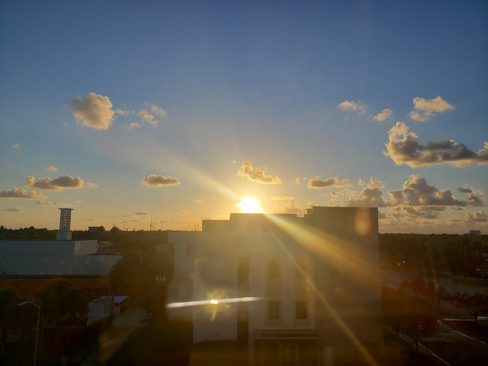
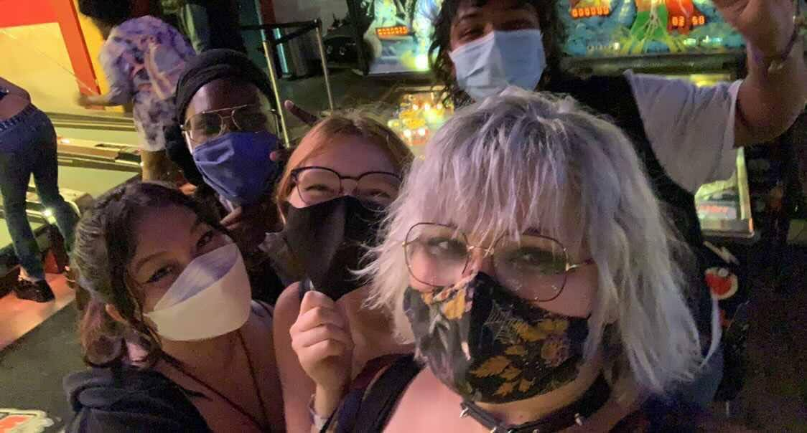
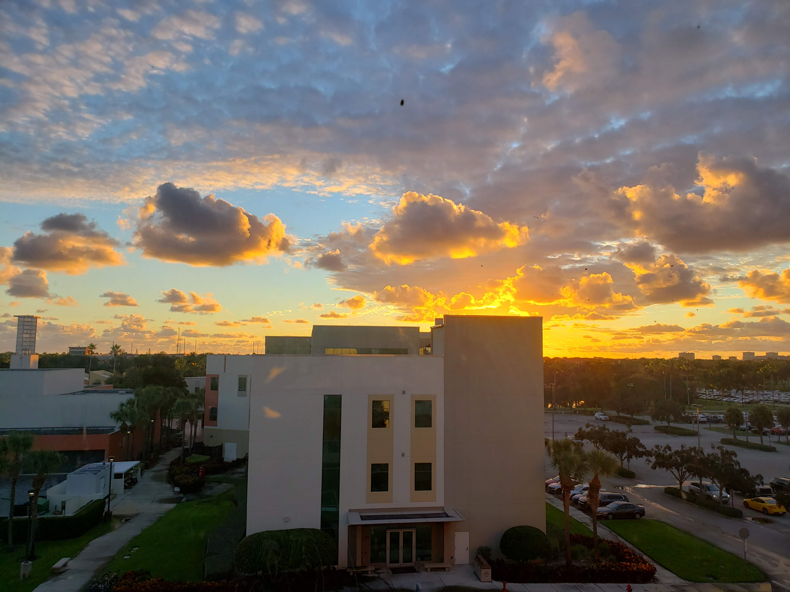
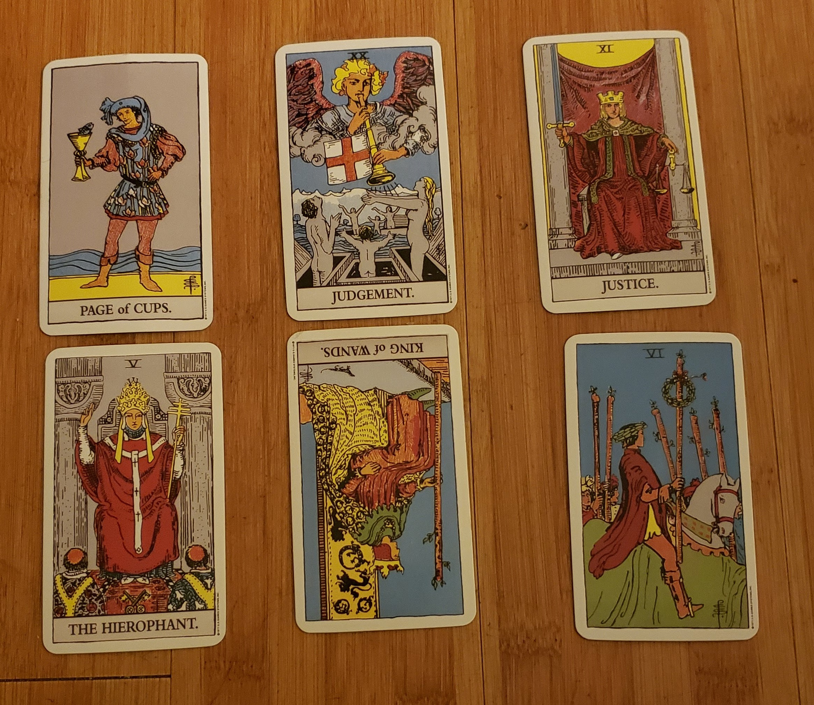
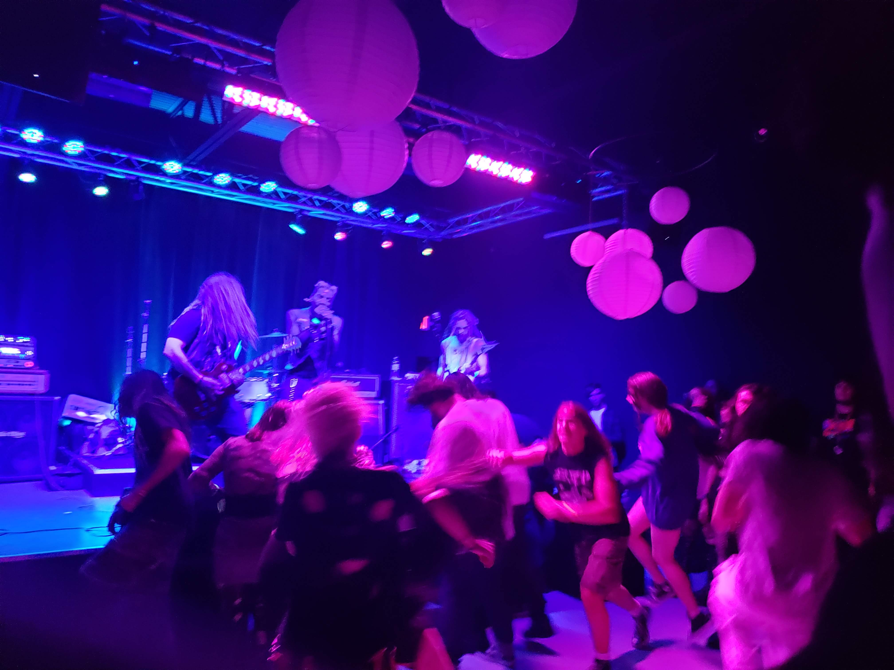
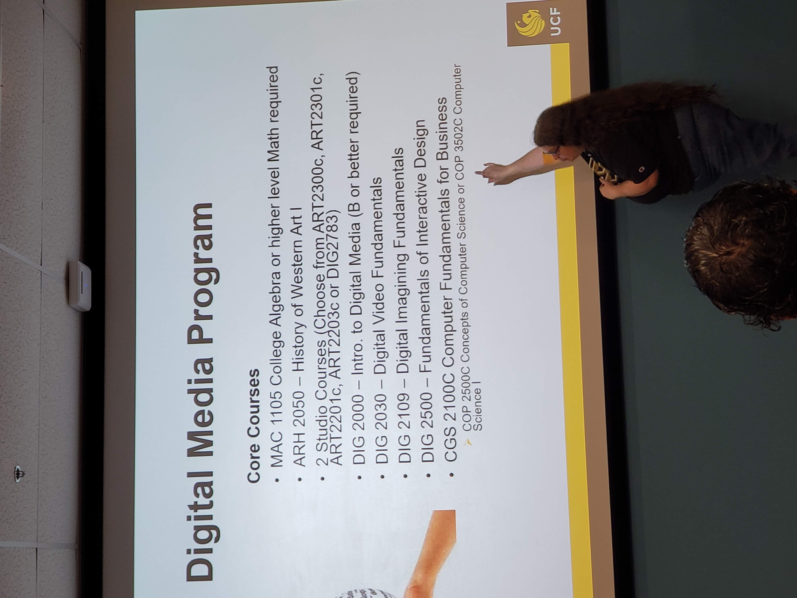
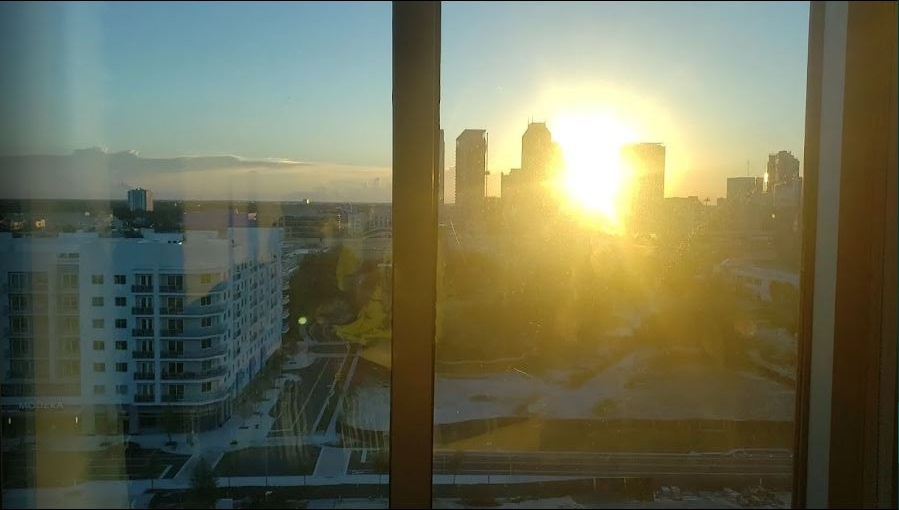

College is an insane transition arc for any student that decides to take it on. Moving away from home, being around new people, it's a total culture-shock! And a university like UCF? Sheesh, that's even worse, what with a huge campus and hundreds of organizations, majors, clubs, greek clubs, etc. For me, though, my "journey" doesn't begin in UCF, it actually begins in a little college down in Boca Raton, an hour away from Miami, right on the Atlantic. How did I end up there? Why did I leave? How in the world have I survived UCF as a transfer student at the DOWNTOWN CAMPUS DORMS of all places? Here's my roundabout process of getting to UCF!
 In August of 2021, I moved into the dorms of FAU as a film major. Pretty different from what I'm doing now, huh? I hadn't done much research on the college and I really didn't know what I wanted to do with my life, so I chose the first thing that seemed mildly interesting to me: film.
The college was more geared towards business and biology majors, so all the arts and creative majors would stick together. 
Being there felt like a deadend. It was hard to meet people, I kept getting worse and worse roommates, and class sizes for film got so small that I couldn't get into any of my required classes. I was miserable there and I really didn't know what to do.
All of that, combined with drama, and losing my few friends, prompted me to leave there as soon as possible. I didn't have the motivation to stay there, so why force myself to? I decided on a different major that more aligned with my goals, chose a better school, and started getting everything I needed to get out of there! It was a hard decision to make because it felt like I was wasting the time and energy of everyone who helped me get to college. But I had to get past the sunk-cost fallacy my mind had crerated in order to actually move on with my life.
 The application process was easy enough, waiting for an acceptance letter? That was the hard part. Sure, I got into college once alright, but doing so a second time time doesn't stop the anxiousness. I prayed, read tarot, and begged any higher power that I got into this school.
 For how often I was checking my email, I got the acceptance letter the day I was at a concert. And from there it was a mad dash to get the transcripts, paperwork, and documentation in so that I can get on to class registration. It was kind of a whorlwind after that, but I had finally made it. 
Coming to UCF was actually kind of scary, I transferred in not knowing anyone, not living on main campus, and just feeling out of my depth in the huge school. But I kept with it, kept trying to meet new people, do better in my schoowork, and just get new experiences. And It worked! Compared to my last college, I was doing better grade wise, mental health wise, and even socially! This year was nothing like how I thought it would be and honestly? I'm happy for it! Taking that leap of face was terrifying, and at times I even regretted it. But in the end, making it to UCF was the best decision I could've made. 